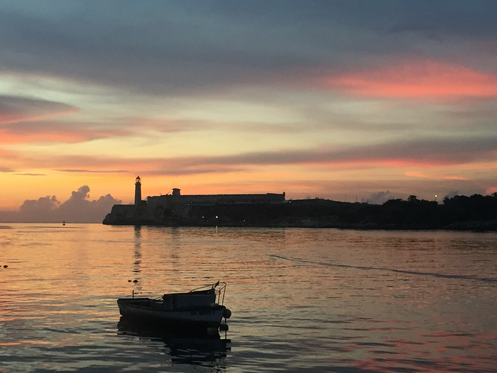
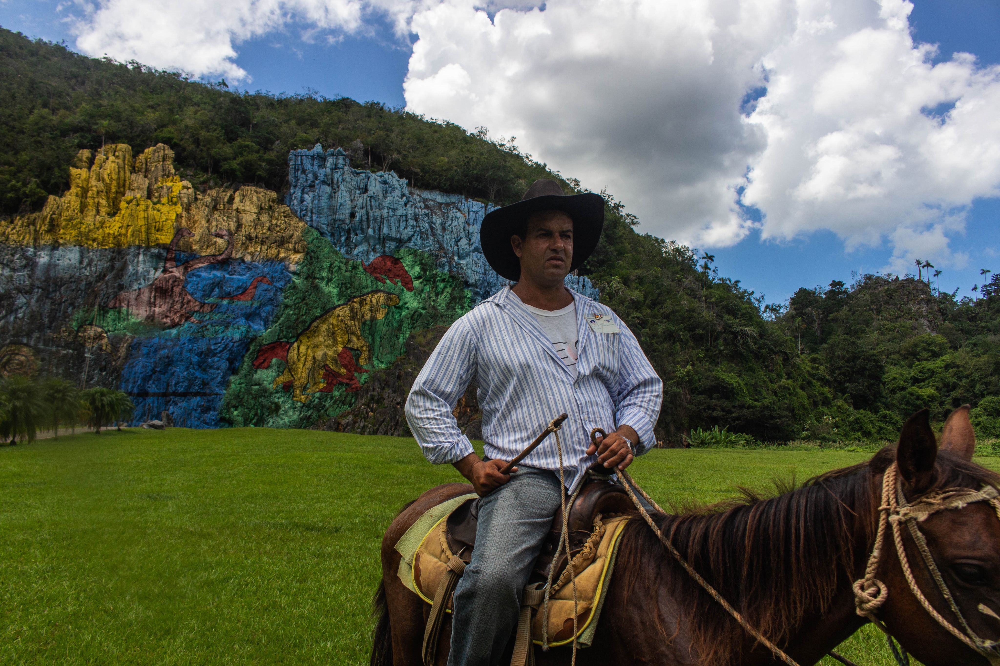

Cuba
Once the leading tourist destination of the Caribbean, Cuba is once again open to Americas after a half a decade long travel ban between the two countries is lifted. Cuba now is very different, having spent years in isolation and under the communist regime but the charm of the country is something that’ll never change.

Even prior to the Covid pandemic, the Cuban government requires all international travelers to fill out a visa. This is relatively simple to do but is necessary to get entry into the country. Some additional country specific regulations pertaining to Covid are:
- A negative test result from a test taken 72 hours prior to departure.
- A secondary negative test result on landing at the traveler's expense.
- Fill out a Health Declaration Form.
- All non-Cuban citizens must quarantine in a hotel for 5 to 6 days at the traveler's expense.
Although Cuba is filled with beautiful and historic cities as well as white sand beaches and vibrant jungles, in a realistic trip with time constraints it would be ideal to center your trip around Havana. The capital not only in a political sense but culturally and spiritually, Havana has everything you could want and more. The cities relative proximity to other destination in Cuba and as a center for transportation also helps if you want to see more of the country. Walking down the streets of the historic district, visiting the famous bars and hotels where prominent celebrities of the past have been, or just enjoying the sunset while walking on El Malecon, a popular and scenic waterfront boardwalk, are all but a few things you can do while in Havana. The city is also home to a fair number of museums, most notably Finca Vigia which was one of the former residences of Ernest Hemingway and The Museum of the Revolution which has a lot of exhibits with historical significance to the Cuban Revolution. The night life in Havana is also filled with options; everything from art galleries retrofitted into clubs, to secret invite only bars, and even a waterfront restaurant which at night turns into the place to be if you want live salsa dancing and music with a view.

You can’t have a trip to Cuba with mentioning Rum and Cigars. Although we don’t condone their consumption, Cuba is famous for it. Rum is readily available in most stores and street corners and the cheapest bottle will cost less than its equivalent in water. The country however has a wide array of rums that vary in price and age. Like many Caribbean countries the Cuban people pride themselves on their rum and Havana Club is considered one of the best. The place where Cubans have no contention is with their Cigars. Widely regarded being the best place in the world for cigars, the vast plantations offer a unique experience for travelers willing to make the short trip from Havana to Vinales. Vinales is a small town nestled in a beautiful valley covered in lust tropical jungle, steep hills, and tobacco plantations. The center of Cuba’s tobacco production, Vinales is also a historic colonial town where one can find some of the nicest villas and hotels with gorgeous views. Vinales is also home to countless hikes and nature centers which can help you see all that the valley has to offer. You can also visit the Mural de la Prehistoria which is a vibrant mural painted on the sheer cliff face of a hill depicting neo-cavemen art.
